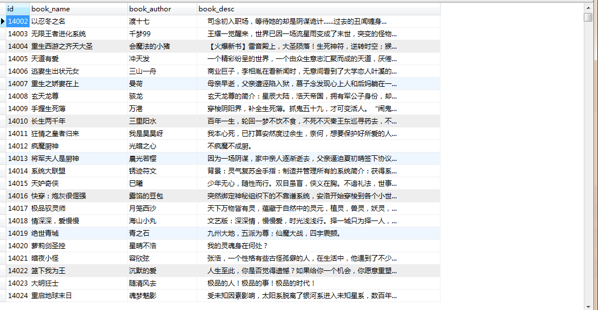
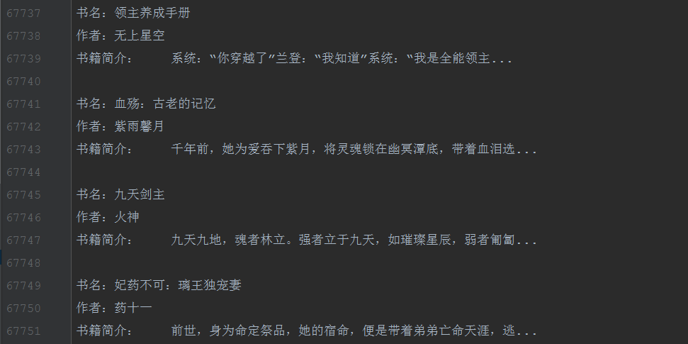

爬取的内容：书籍名称，作者名称，书籍简介，全书网5041页,写入mysql数据库和.txt文件
1，创建scrapy项目
scrapy startproject numberone2，创建爬虫主程序
cd numberone
scrapy genspider quanshuwang www.quanshuwang.com3，setting中设置请求头
USER_AGENT = "Mozilla/5.0 (Windows NT 6.1; WOW64) AppleWebKit/537.36 (KHTML, like Gecko) Chrome/39.0.2171.71 Safari/537.36"4，item中设置要爬取的字段
class NumberoneItem(scrapy.Item):
# define the fields for your item here like:
# name = scrapy.Field()
book_author = scrapy.Field()
book_name = scrapy.Field()
book_desc = scrapy.Field()5，quanshuwang.py主程序中写获取数据的主代码
# -*- coding: utf-8 -*-
import scrapy
from numberone.items import NumberoneItem
class QiubaiSpider(scrapy.Spider):
name = 'quanshuwang'
# 这句话是定义爬虫爬取的范围，最好注释掉
# allowed_domains = ['www.qiushibaike.com']
# 开始爬取的路由
start_urls = ['http://www.quanshuwang.com/list/0_1.html']
def parse(self, response):
book_list = response.xpath('//ul[@class="seeWell cf"]/li')
for i in book_list:
item = NumberoneItem()
item['book_name'] = i.xpath('./span/a/text()').extract_first()
item['book_author'] = i.xpath('./span/a[2]/text()').extract_first()
item['book_desc'] = i.xpath('./span/em/text()').extract_first()
yield item
next = response.xpath('//a[@class="next"]/@href').extract_first()
if next:
yield scrapy.Request(next, callback=self.parse)6，pipelines.py管道文件中文件中写持久化保存.txt和mysql。
# -*- coding: utf-8 -*-
# Define your item pipelines here
#
# Don't forget to add your pipeline to the ITEM_PIPELINES setting
# See: https://docs.scrapy.org/en/latest/topics/item-pipeline.html
import pymysql
# 写入文件的类
class NumberonePipeline(object):
f = None
def open_spider(self,spider):
self.f = open('全书网.txt','a+',encoding='utf-8')
def process_item(self, item, spider):
print(item['book_name']+'：正在写入文件...')
book_name = item['book_name']
book_author = item['book_author']
book_desc = item['book_desc']
self.f.write('书名：'+book_name+'\n'+'作者：'+book_author+'\n'+'书籍简介：'+book_desc+'\n\n')
return item
def close_spider(self,spider):
self.f.close()
# 写入数据库的类
class MysqlPipeline(object):
conn = None
mycursor = None
def open_spider(self,spider):
self.conn = pymysql.connect(host='172.16.25.4',user='root',password='root',db='quanshuwang')
self.mycursor = self.conn.cursor()
def process_item(self, item, spider):
print(item['book_name'] + '：正在写数据库...')
book_name = item['book_name']
book_author = item['book_author']
book_desc = item['book_desc']
self.mycursor = self.conn.cursor()
sql = 'insert into qsw VALUES (null,"%s","%s","%s")'%(book_name,book_author,book_desc)
bool = self.mycursor.execute(sql)
self.conn.commit()
return item
def close_spider(self,spider):
self.conn.close()
self.mycursor.close()7，setting.py文件中打开管道文件。
ITEM_PIPELINES = {
'numberone.pipelines.NumberonePipeline': 300,
'numberone.pipelines.MysqlPipeline': 400,
}8，执行运行爬虫的命令
scrapy crawl quanshuwang --nolog9,控制台输出
贵府嫡女：正在写数据库...
随身空间农女翻身记：正在写入文件...
随身空间农女翻身记：正在写数据库...
阴间商人：正在写入文件...
阴间商人：正在写数据库...
我的美味有属性：正在写入文件...
我的美味有属性：正在写数据库...
剑仙修炼纪要：正在写入文件...
剑仙修炼纪要：正在写数据库...
在阴间上班的日子：正在写入文件...
在阴间上班的日子：正在写数据库...
轮回之鸿蒙传说：正在写入文件...
轮回之鸿蒙传说：正在写数据库...
末日星城：正在写入文件...
末日星城：正在写数据库...
异域神州道：正在写入文件...
异域神州道：正在写数据库...10，打开文件和数据库查看是否写入成功


done。